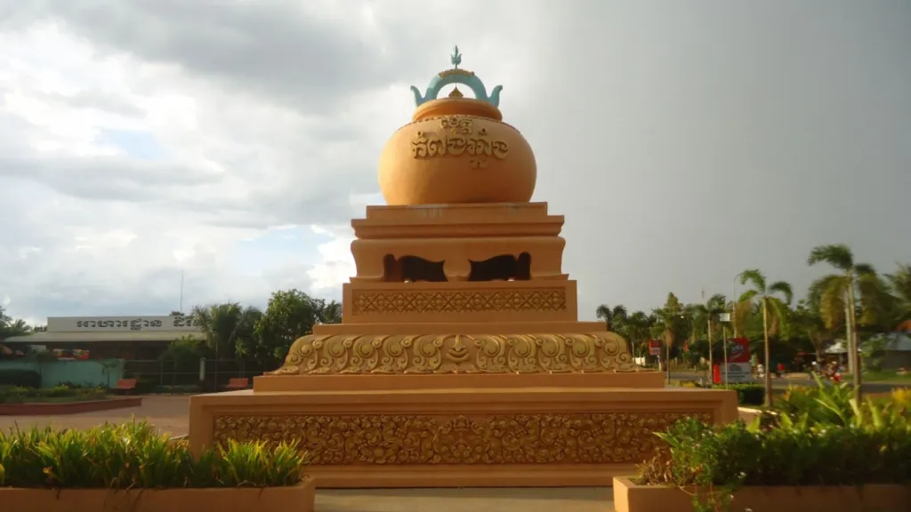

អំពីខេត្តកំពង់ឆ្នាំង
ខេត្តកំពង់ឆ្នាំង ស្ថិតនៅភាគកណ្ដាលនៃព្រះរាជាណាចក្រកម្ពុជា និងមានភាពល្បីល្បាញ ដោយសារការផលិតឆ្នាំងដីដែលមានគុណភាពខ្ពស់ និងជាសិប្បកម្មប្រពៃណីរបស់ប្រជាពលរដ្ឋ។ ខេត្តនេះក៏មានបឹង ទន្លេ និងភូមិបណ្តែតទឹកជាច្រើន ដែលបង្កើតទេសភាពធម្មជាតិ និងទាក់ទាញភ្ញៀវទេសចរមកទស្សនាជារៀងរាល់ឆ្នាំ។
ប្រវត្តិសង្ខេប
ខេត្តកំពង់ឆ្នាំងមានប្រវត្តិយូរអង្វែង និងឈ្មោះរបស់ខេត្តមានប្រភពមកពី ការផលិតឆ្នាំងដីដែលធ្លាប់ជាមុខរបរសំខាន់របស់ប្រជាជនក្នុងតំបន់។ តាមរយៈទីតាំងនៅជាប់ទន្លេសាប ខេត្តនេះបានក្លាយជាមជ្ឈមណ្ឌលពាណិជ្ជកម្ម និងការដឹកជញ្ជូនតាមផ្លូវទឹកតាំងពីសម័យបុរាណរហូតមកដល់បច្ចុប្បន្ន។
កន្លែងទេសចរណ៍សំខាន់ៗ
- ភូមិបណ្តែតទឹកកំពង់លួង
- ភ្នំនាងកង្រី
- កំពង់ផែទន្លេសាប
- ភូមិសិប្បកម្មផលិតឆ្នាំងដី
- វត្តធម្មយុត្តិ
- ផ្សារកំពង់ឆ្នាំង
ទីតាំងភូមិសាស្ត្រ
ខេត្តកំពង់ឆ្នាំង ស្ថិតនៅភាគកណ្ដាលនៃប្រទេសកម្ពុជា មានព្រំប្រទល់ជាប់ខេត្តកំពង់ស្ពឺ ខេត្តពោធិ៍សាត់ ខេត្តកំពង់ធំ ខេត្តកណ្ដាល និងបឹងទន្លេសាប។ ទីតាំងភូមិសាស្ត្ររបស់ខេត្តអំណោយផលដល់វិស័យនេសាទ កសិកម្ម និងទេសចរណ៍ធម្មជាតិ ជាពិសេសតំបន់ជាប់បឹងទន្លេសាប។